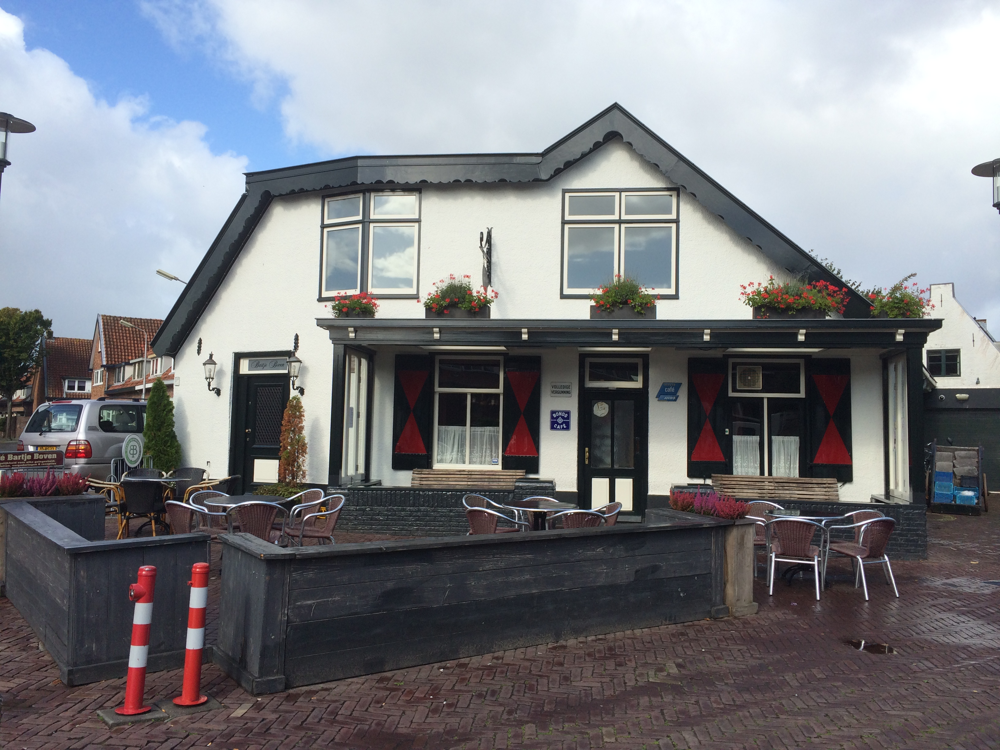

Horeca
In Santpoort-Noord zijn er verschillende eetgelegenheden/cafés waar u uit eten kunt gaan of een lekkere borrel kunt gaan drinken. Hieronder vindt u een uitgebreide lijst met alle horeca in Santpoort-Noord.
De Meierij
Bij de Meijerij kunt u terecht voor gezonde gerechten. Er is een flinke keuze aan gerechten op de menukaart. Het menu varieert van asperges met boerenbeenham tot garnalenkroketten. Voor de uitgebreide menukaart kunt u op deze link klikken. De Meijerij is geopend van woensdag tot en met zondag vanaf 17:00 uur.
Dingespoort
Dingespoort is een grill-restaurant met veel verschillende soorten vleesgerechten. Denk hierbij aan shoarma, kofta en kapsalonschotels. Ook kunt u hier terecht als u vegetarisch bent. Voor de vegetariërs serveren ze bijvoorbeeld falafel. Voor de complete menukaart klikt u hier. Dingespoort is op alle dagen van de week, met uitzondering op dinsdag, geopend vanaf 16:00 uur.
Eetlokaal 't Palet
Eetlokaal ’t palet is te vinden in het centrum van Santpoort-Noord. De seizoenen bepalen de samenstelling van de kaart. Je kunt in dit restaurant terecht voor zowel een lunch als diner. Ook kunt u langs komen voor een borrel, biertje of een goed glas wijn. Eetlokaal ’t palet is geopend van woensdag t/m zaterdag vanaf 10:30 uur. Vanaf 17:30 uur is de keuken geopend voor het diner.
Ramsis
Ramsis is een Italiaans restaurant waar u kunt genieten van allerlei typisch Italiaanse gerechten. Denk bijvoorbeeld aan pizza, spaghetti en allerlei verschillende soorten pasta. Ook kunt u er terecht voor vlees en vis gerechten zoals shoarma, kip en carpaccio. Ramsis is geopend op dinsdag t/m zondag van 16:00 uur tot 23:00 uur
De Wildeman
Café-Brasserie De Wildeman, opgericht in 2004, bevindt zich in de kern van Santpoort-Noord. Je kunt er elk moment van de dag terecht voor koffie, het lezen van een krantje of het nuttigen van een lunch. In de avonduren verandert deze gelegenheid tot een gezellige stamkroeg. De Wildeman is elke dag geopend van 10:00 uur tot 1:00 uur.
Bartje
Café Bartje is een café in het centrum van Santpoort-Noord. Het café bestaat uit twee gedeeltes; Café Bartje en Bartje Boven. In Café Bartje kunt u de hele week door terecht voor een borrel. Bartje Boven is een aparte zaal die speciaal is ingericht voor de verhuur. Bartje is geopend van 14:00 uur tot 1:00 uur.
De Halve Maan
De Halve Maan is een café met in de zomer een prachtige tuin waar u buiten kunt genieten van uw drankje. Ook is hier regelmatig live muziek van regionale bandjes te horen. De Halve Maan is de hele week door geopend van 15:30 uur tot en met 0:00 uur.
McDonald's

Ook voor de welbekende McDonalds kunt u terecht in Santpoort-Noord. Het uitgebreide menu vindt u op de website van de McDonalds. De McDonalds is de hele week geopend van 7:00 uur tot 1:00 uur.